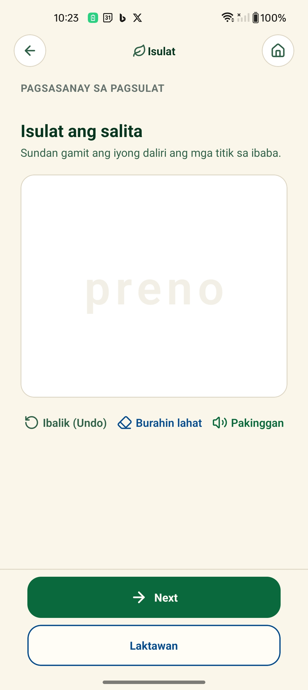
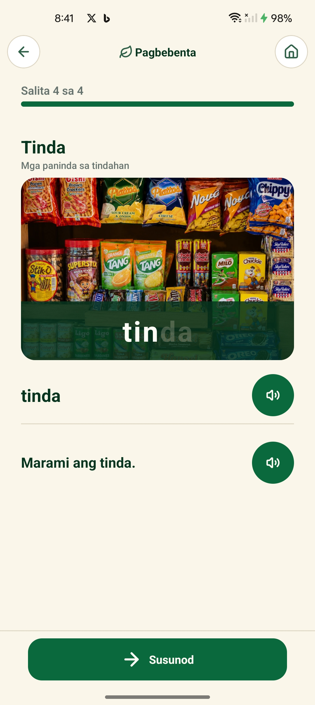
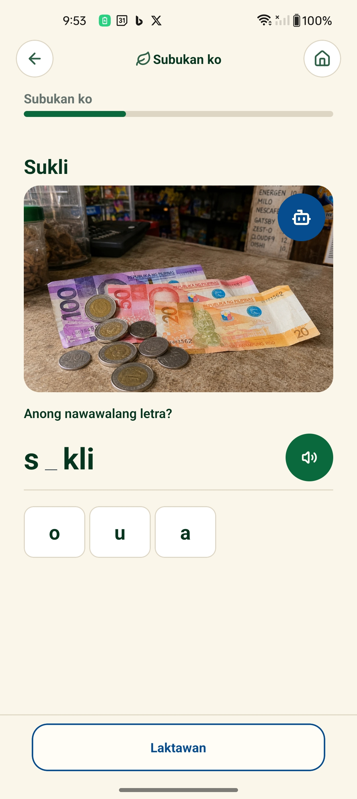
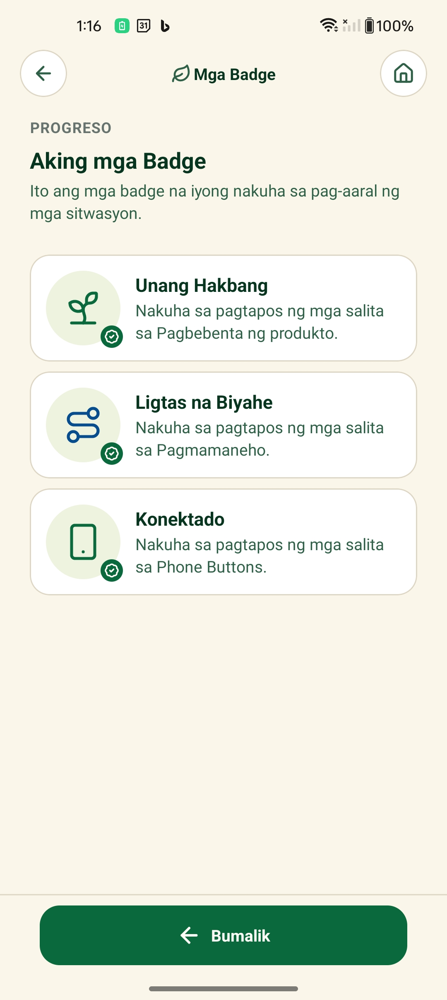

Gabay sa paggamit
Limang hakbang lang. Sarili mong oras, sarili mong bilis. Walang hiya, walang presyur.

Hakbang Isa
Libre ang BasaKonek sa Google Play Store. Hindi kailangan ng account para magsimula — buksan mo lang at handa na.

Hakbang Dalawa
Mayroon kaming mga aralin tungkol sa tindahan, pagmamaneho, mensahe, at iba pa. Piliin ang paksa na gamit mo araw-araw.
Hakbang Tatlo
Makikita mo ang salita kasama ang larawan. I-tap ang sound button para marinig kung paano binibigkas. Ulitin hanggang comfortable ka na.

Hakbang Apat
Pagkatapos marinig ang salita, may maikling pagsasanay — halimbawa, anong letra ang nawawala? Hindi ito pagsusulit. Laro lang para matandaan mo.

Hakbang Lima
Matapos ang bawat paksa, makakakuha ka ng personal na badge — para sa iyo lang. Hindi ito diploma o sertipiko. Paalala lang na kaya mo ito.
I-download ang BasaKonek ngayon. Libre, walang ads, at hindi mo kailangan ng mabilis na internet.
I-download — Libre